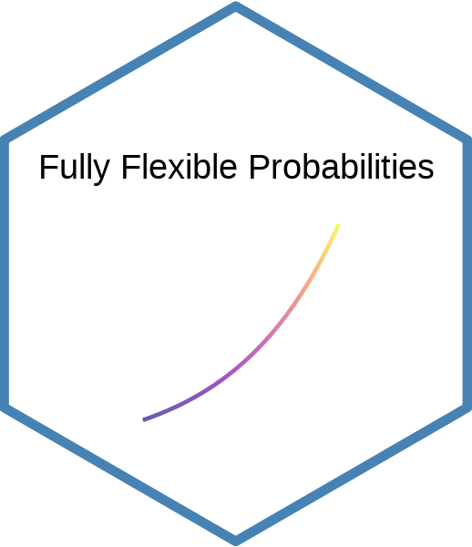
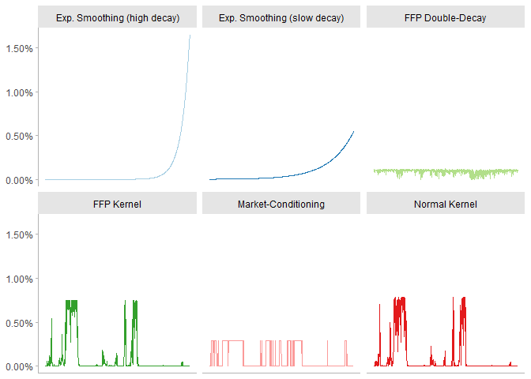

Functions for Scenario Analysis and Risk Management
Oftentimes, the econometrician needs to stress-test the potential outcomes for a given set of risk-drivers. This process can be computationally costly when the entire set of scenarios needs to be repriced.
To overcome this difficulty, the Fully Flexible Probabilities (FFP) approach offers an inexpensive way for scenario generation: it reprices the probabilities associated to each scenario, instead of the scenarios themselves. Once the new probabilities have been defined, the computations can be performed very quickly because the burden of scenario generation has been left aside.
Installation
Install the official version from CRAN with:
install.packages("ffp")Install the development version from github with:
# install.packages("devtools")
devtools::install_github("Reckziegel/ffp")Probability Estimation
The package ffp comes with five functions to extract probabilities from the historical scenarios:
-
exp_decay(): accounts for the time-changing nature of volatility by giving more weight to recent observations; -
crisp(): selects scenarios where a logical statement is satisfied; -
kernel_normal(): generalizes thecrispcondition by wrapping scenarios over a normal kernel; -
kernel_entropy(): uses entropy-polling to satisfy a conditioning statement; -
double_decay(): uses entropy-polling and a double-decay factor to constrain the first two moments of a distribution.

Stress-Testing and Portfolio Construction
The package also offers eight different constructors to make it easier to input views on the market for portfolio optimization (mean-variance, risk-parity, etc.):
view_on_mean()view_on_covariance()view_on_correlation()view_on_volatility()view_on_rank()view_on_copula()view_on_marginal_distribution()view_on_joint_distribution()
The output is a list that entropy_pooling() can handle easily. To combine multiple views in a single object use bind_views().
Scenario Analysis
Once the new probabilities have been estimated, bootstrap_scenarios() can be used to sample data, while keeping the structure of the empirical copulas intact.
The main statistics of arbitrary scenarios can be computed with empirical_stats().
References
Attilio Meucci (2021). Historical Scenarios with Fully Flexible Probabilities (https://www.mathworks.com/matlabcentral/fileexchange/31360-historical-scenarios-with-fully-flexible-probabilities), MATLAB Central File Exchange. Retrieved June 11, 2021.
De Santis, G., R. Litterman, A. Vesval, and K. Winkelmann, 2003, Covariance matrix estimation, Modern investment management: an equilibrium approach, Wiley.
Meucci, Attilio, Fully Flexible Views: Theory and Practice (August 8, 2008). Fully Flexible Views: Theory and Practice, Risk, Vol. 21, No. 10, pp. 97-102, October 2008, Available at SSRN: https://www.ssrn.com/abstract=1213325
Meucci, Attilio, Historical Scenarios with Fully Flexible Probabilities (October 23, 2010). GARP Risk Professional, pp. 47-51, December 2010, Available at SSRN: https://www.ssrn.com/abstract=1696802 or http://dx.doi.org/10.2139/ssrn.1696802